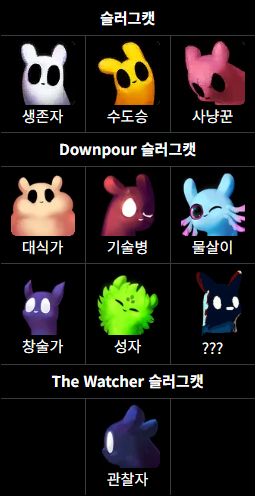
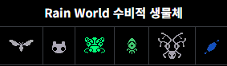
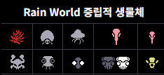
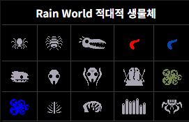
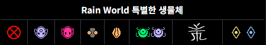

1. 개요
레인월드는 플레이어블 캐릭터인 슬러그캣 외에도 매우 다양한 생물들이 생태계 속에서 각자의 위치를 지키며 복잡한 관계를 맺는 것이 특징인 게임이다. 슬러그캣에게 우호적인 생물들이 있는가 하면, 공격만 하지 않으면 중립적인 관계를 유지할 수 있거나, 서로를 무시하거나, 슬러그캣을 먹으려고 달려드는 생물들도 있다. 또한 포식자들이 슬러그캣 외의 다른 생물들을 사냥하거나, 포식자가 또 다른 포식자에게 사냥당하는 등 유기적인 생태계를 구현해 놓았다.
때문에 레인월드를 시작했다면 생태계의 일원인 슬러그캣로서, 다른 다양한 생물들의 생태와 특징을 파악하고, 그들과 싸우거나, 사냥하거나, 함께 살아가는 방법을 배워 갈 필요가 있다.
2. 상세
슬러그캣 외의 생물체들은 모두 자신들만의 피난처(굴)를 가지고 있으며, 주기가 시작될 때 굴에서 나오고, 주기가 끝나 가거나 체력이 일정 이상 감소했을 경우 자신의 굴로 돌아가려고 한다. 또한 슬러그캣은 이용할 수 없으나 다른 생물들은 이용 가능한 통로도 있다. 주기가 끝나기 전 죽었을 경우 확률에 따라 리스폰하거나 다른 생물체로 변하기도 하는데 이에 대해서는 리니지 시스템 문단 참고.
생물체들은 외형, 성격, 종족 내 지위 등을 종합하여 고정하는 ID 시스템을 사용한다. 이 때문에 같은 종족이라도 동일한 개체는 사실상 볼 수 없으며, 역으로 같은 ID를 가진 개체는 완전히 동일한 개체이다.
2.1. 관계
레인월드의 생태계는 각 생물들마다 설정된 '관계' 값에 크게 좌우된다. 생물은 다른 생물이 근처에 있음을 감지하면 '관계 추적기'가 활성화되며, 이 관계에 따라 다음 행동을 결정하게 된다.
- 무시(Ignores): 말 그대로 대상 생물체를 없는 취급한다.
- 먹고 싶음(Eats): 대상 생물을 적극적으로 공격하고, 죽은 대상을 집어갈 수 있으며, 대상을 물거나 잡고 있는 경우 굴로 돌아간다.
- 두려움(Afraid): 대상 생물체로부터 멀리 도망친다.
- 공격(Attacks): 대상 생물체를 죽이려고 시도한다.
- 적대시(Antagonizes): 대상 생물체를 공격하지만 치명적인 공격을 가하지는 않는다.
- 불편함(Uncomfortable): 일반적으로 대상 생물체에게 불편함이 누적되다가 결국 대상을 공격하게 한다.
- 무리(Pack): 대상을 자기 무리의 일원으로 여기며 가까이에 뭉쳐 다닌다.
- 적대적 라이벌(AgressiveRival): 도마뱀과 오징어매미에만 해당한다.
더불어 관계값은 0.0~1.0 사이의 값을 가지며, 이 값의 차이에 따라서도 행동이 달라진다. 예를 들어 초록 도마뱀의 경우 스캐빈저는 기본 Eats 관계값이 0.8이고, 파란 도마뱀은 0.25이기 때문에, 스캐빈저와 파란 도마뱀이 한 자리에 있는 경우 스캐빈저를 우선해서 먹으려고 할 것이다.
또 관계값은 항상 고정인 것이 아니며 평판, 생물의 성격, 플레이어의 행동, 거리 등에 따라 유동적으로 변화한다.
2.2 평판
특정 생물들은 평판 시스템을 사용하며 평판에 따라 슬러그캣을 대하는 태도에 변화가 생긴다. 대체로 친절하게 행동하면 평판이 오르고, 폭력을 사용하면 평판이 내려가는 방식이다.
평판은 지역 내에서의 평판과 글로벌 평판으로 나뉜다. 지역 평판은 말 그대로 해당 지역 내에서의 평판으로, 지역 내의 생물체들의 행동에 영향을 끼친다. 글로벌 평판은 모든 지역의 모든 생물체들의 행동에 영향을 끼친다.
그 외에 생물의 행동에 영향을 미치는 것이 아니라 앞으로의 평판 증감에 영향을 주는 '전체 평판' 점수도 있다. 박쥐파리와 독수리 애벌레를 제외한 모든 생물체를 죽이는 행위로 떨어지며, 평판 시스템을 사용하는 생물체에게 우호적인 행동을 하는 방식으로만 올릴 수 것인다. 단 전체 평판은 스캐빈저에게는 영향을 전혀 미치지 않는다.
평판 시스템을 사용하는 생물들은 다음과 같다.
- 스캐빈저: 평판 하면 가장 먼저 떠올릴 대표적인 생물체로, 평판이 낮으면 선공당하지만 충분히 높으면 무리로 여겨질 수 있는 등 다이나믹한 관계 변화를 보인다.
- 도마뱀: 도마뱀을 길들이는 행위가 평판 시스템의 영향을 받는다. 때문에 많은 도마뱀에게 선물을 줌으로써 평판을 올리다 보면 어느 순간 모든 도마뱀이 슬러그캣을 공격하지 않게 되는 순간이 온다. 이것을 '중립화'라고 부른다.
- 오징어매미, 쓰레기벌레, 제트물고기, 토끼사슴: 평판 시스템을 사용하긴 하지만 특별히 높거나 낮아도 행동에 큰 변화는 없다.
2.3 리니지 시스템
일반적으로 한 지역 내에서 한 생물이 플레이어에게 사망하면 다음 주기에 일정 확률로 리스폰되는데, 이 리스폰 조건을 충족할 때 일정 확률로 다른 종으로 대체되는 시스템이 있다. 이 시스템을 리니지 시스템(Lineage System)이라고 한다. 정확하게는, 각 생물체들의 굴에서 시스템이 작동한다. 각 굴마다 한 종이 사망하면 그 다음 어떤 종이 등장하게 될지와 그 확률이 지정되어 있다.
예시로, 교외에 있는 한 굴은 초록(10%)-분홍(50%)-파랑(20%)-빨간도마뱀(0%)으로 등장하는 순서와 확률이 정해져 있다. 이 경우엔 초록 도마뱀이 사망하면 다음에 리스폰될 때 10% 확률로 분홍 도마뱀으로 교체된다. 이 분홍 도마뱀도 사망하면 50% 확률로 파랑 도마뱀으로 교체되고, 파랑 도마뱀마저 죽으면 최종적으로 20% 확률로 빨간 도마뱀이 등장한다. 이 이후로는 더 교체되지 않는다.(0%) 이 교체는 그 굴에만 한정된다.
2.4. 체력 및 죽음
레인월드 생물들의 큰 특징은 체력이 0이 된다고 해서 죽지 않는다는 점이다. 체력은 음수까지 내려갈 수도 있고, 체력이 0 미만이 되면 생물들은 '출혈 상태'에 돌입하여 초당 사망 확률을 계산한다. 생물마다 조금씩 다르지만 대체로 체력이 낮아질수록 확률이 기하급수적으로 올라간다.
특정 생물체들은 한번에 일정 이상의 대미지를 받으면 즉사하기도 하며, 이 대미지 컷을 '즉사 임계값'이라 부른다. 대표적으로 슬러그캣은 1.0 이상의 대미지를 받으면 출혈 상태 없이 무조건 죽는다. 즉사 임계값이 있는 생물들은 대부분 크기가 작으며, 스캐빈저, 제트물고기 등이 그나마 큰 축에 속한다.
또 낙사, 살아있는 풀/대디 롱 레그, 레비아탄의 씹기 공격 등 체력과 관계없이 무조건 즉사하는 판정도 있다.
잃은 체력은 해당 주기 동안에는 자연적으로 회복하지 않는다.
3. 종류
3.1. 슬러그 캣

플레이어블 캐릭터이자 생물체. 레인월드의 거의 모든 생물들은 슬러그캣과 다양한 관계를 맺는다.
3.2. 수비적 생명체

슬러그캣에게 선제 공격 내지 피해를 끼치지 않으며, 대부분 슬러그캣이 잡아먹을 수 있거나 혹은 유용하게 활용할 수 있는 생물들이다.
3.3. 중립적 생명체

슬러그캣에게 위해, 피해를 끼칠 수 있으나 적극적으로 선제 공격하지 않거나, 선제 공격 혹은 방어를 취하더라도 그게 직접적인 죽음으로 이어지지는 않는 생물들이다.
3.4. 적대적 생명체

슬러그캣을 적극적으로 선제 공격 혹은 사냥하려고 들며, 이들의 공격은 대체로 치명적이다. 어쩌면 레인월드에서 가장 많이 마주치게 될 생물체들로, 이들의 특징과 대처법을 잘 파악해둘 필요가 있다.
3.5. 특별한 생명체

생태계의 순환에 거의 관여하지 않으며 대체로 스토리와 로어에 관련되어 있는 존재들이다.